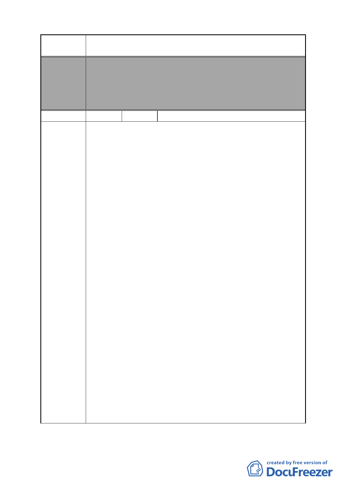

案 名 變更臺北市南港區鐵路地下化沿線土地主要計畫案
委員會
決議
編號
陳情理由
本案除文字誤繕應再作修正外，其餘依市府本次會議所送修
正計畫書內容通過。
（依市府本次會議說明，因陳情地點使用分區為策略型工業
區，依現行規定即可作廠辦使用，且作策略型產業使用時亦
可有容積獎勵，故不納入本計畫範圍）
57 陳情人 昆陽街全體住戶
1.市地重劃後分配方式不公，明顯圖利財團侵害人民財產權
易。
（1）昆陽街房屋土地雖為工業用地廠房，但因其面臨昆陽
街，其房價本就高於周邊巷弄，如今不分房價高低，全
區域一視同仁，如此分配方式，其利基點不對等為不公
之一。
（2）市地重劃後分配方式為抽籤方式定之，不分土地所在地
為面臨昆陽街上房價較高，或是周邊巷弄及後方空地較
低之房價，全區統合一同抽籤分配，屆時當出現後方、
角落或空地之土地所有權人，分配臨馬路價值較高之土
地，而昆陽街之土地所有權人分配到後方、角落價值較
低之土地，如此分配方式對整條昆陽街住戶甚為不公，
為不公其二。
（3）不計房價只按所有權土地面積計算，則財團所有權土地
為無地上物空地，如此計價明顯圖利財團，侵害人民財
產權益。
2.昆陽街房屋為本地居民安身立命之所，如拆除則升斗小民將
面臨生計危機之苦。
（1）不計房價只按所有權土地面積計算，則以一戶 30 坪之
公寓為例，四層樓則其土地所有權約只有四分之一，為
7.5 坪，五層樓則其土地所有權約只有五分之一，為 6
坪，其房地價值明顯縮小，為不公之三。
（2）以一戶 30 坪之五層樓公寓為例，一戶為 6 坪土地參與
不公之市地重劃案，變更地目為住商，按規定要回饋 45
％給政府，則土地所有權人只剩 3.5 坪，分配後自行房
屋起造事宜，試問升斗小民窮一生積蓄方購得一屋以安
身立命之所，如今哪有龐大資金來建造房屋，又只剩 3.5
坪如何建屋，如果和建商合建又能分倒幾坪可以安身立
命，屆時將成為無殼蝸牛，面臨生計危機之苦。
- 61 -